三豊運輸 hero remake: three fixes on round 7
Updated after the reviewer's verdict on the map truck: its stripe is now a band across the tail (section 2), and section 3 has one alternative for the progress truck's cab.
The map's place against the desktop band, the truck on the map, and the little truck on the progress bar. One commit each with its own evidence folder; this page gathers the pictures, each before and after at the desktop framing and on a 390 px phone, with both trucks magnified and the rejected drawings. Nothing else in round 7 was touched.
Earlier: round 7.
1. The map stands the full 89 px higher, at full size
As you specified: the map is not made smaller, its top moves to -77, and the name 新潟 moves down into the open part of Niigata's own land so that it still clears the phone's buttons. The numbers are the ones you measured.
| node tools/map-band.mjs round2 | Before (36 px) | Now (89 px) |
|---|---|---|
| The band's darkness over the hub | 15 % | 0 % |
| over the three name cards | 15 %, 5 %, 0 % | 0 %, 0 %, 0 % |
| over the name 東京 | 19 % | 4 % |
| 新潟 below the phone's buttons | 10 px | 17 px |
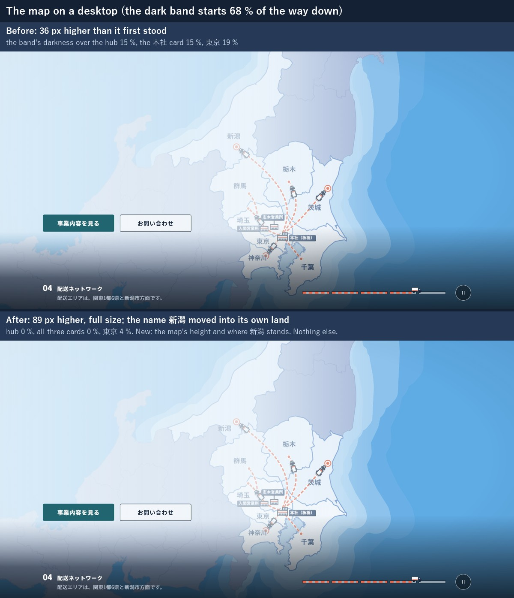
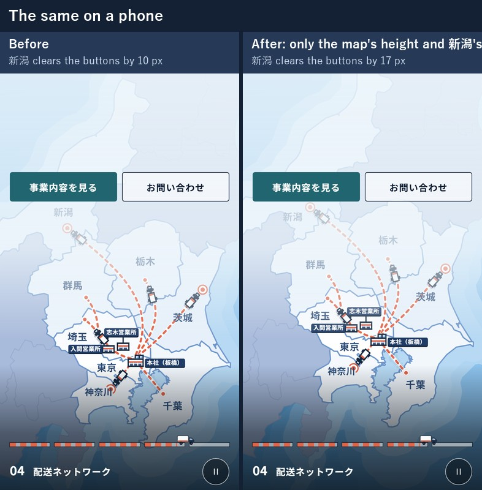
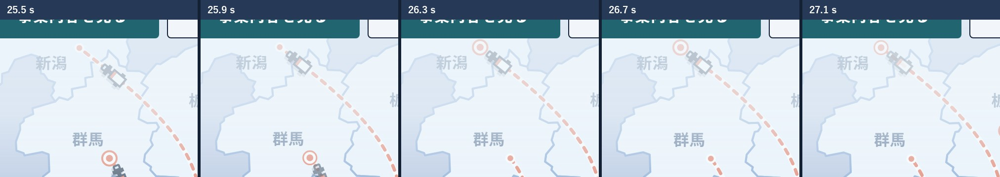
2. The map truck is the film's own truck, seen from above
The steering, the wheelbase model, the shadow and the 1.5x size stay. The drawing is new: a long white box inside one navy outline with the vermilion stripe as a band across its tail, one navy cab joined to the box with the windscreen across it, and four short wheel marks at the corners. Few parts, mostly white, nothing under 3 stage px.
The stripe is at the tail by the reviewer's verdict. I had first picked the stripe along both sides. It came out for three reasons: with no dark edge along its long sides that truck read as a pale capsule at true phone size; on this map vermilion means the route, so vermilion flanks on a vermilion dashed line blurred into the line; and the tail band is the film's truck (white, navy, one small vermilion accent) that sits with the navy cards and names instead of competing with the routes.
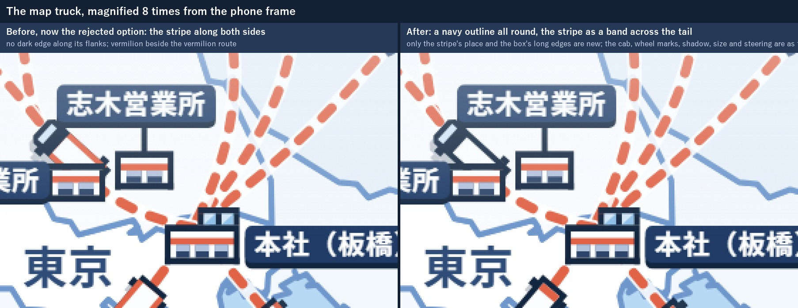
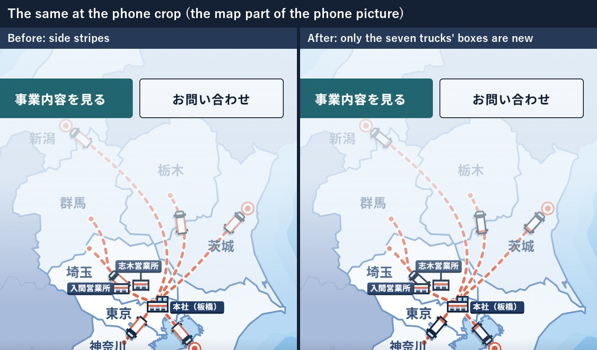
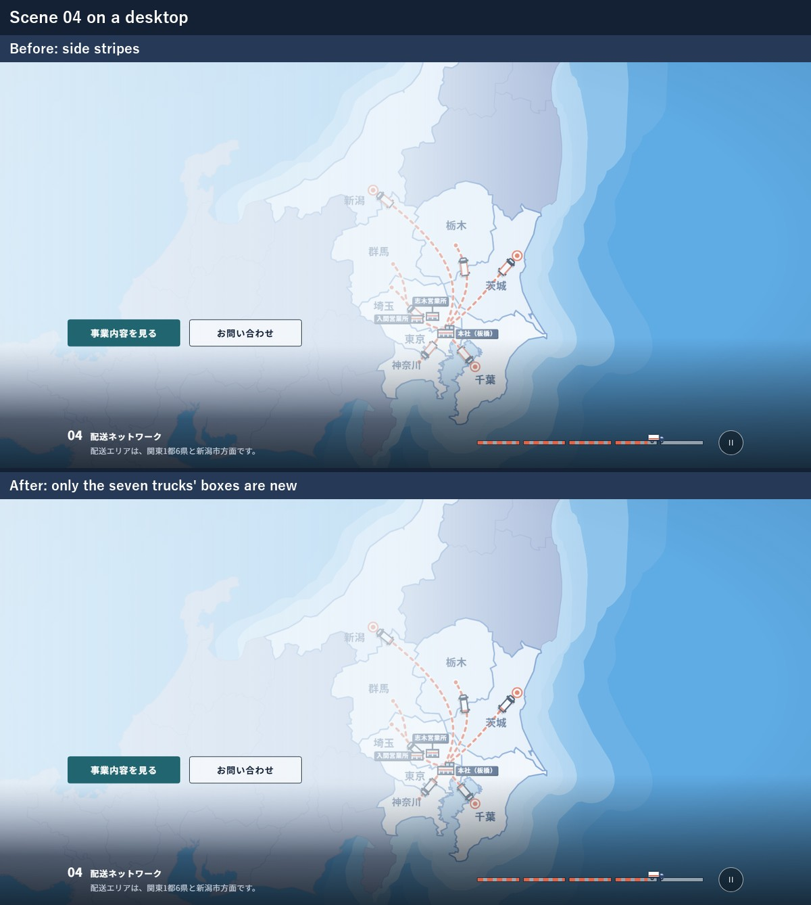
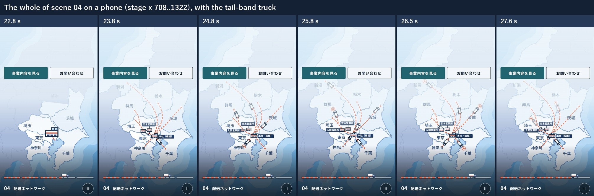
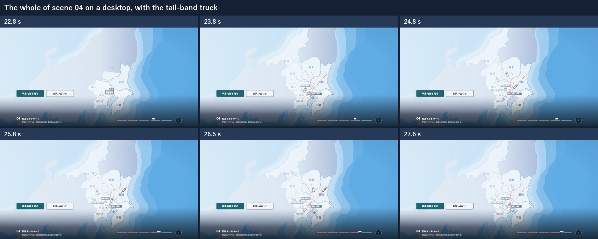
The three drawings as first judged
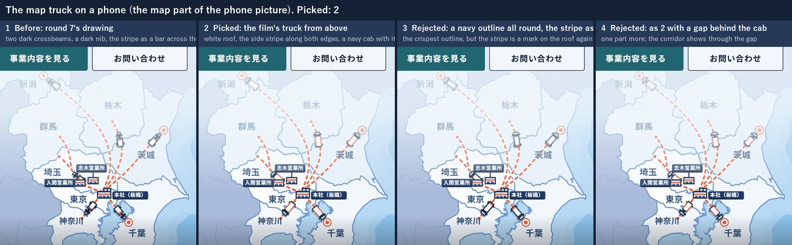
r9-map-truck-opt-sides.js), and so is 4, the gap behind the cab (r8-map-truck-opt-gap.js).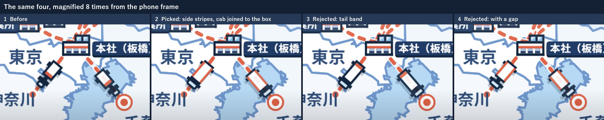
3. The little truck on the progress bar
It was the site's original drawing, never remade because it lives in the player (round2/js/hero-glue.js), not in the scene code. It is now the film's truck at the same 30 x 16 px: a tall white box in a navy outline with the stripe in its lower third and a white row under it, a lower navy cab with its glass, a dark chassis, and two wheels with steel hubs tucked under the body. The element's box is unchanged, so the site's CSS still places it.
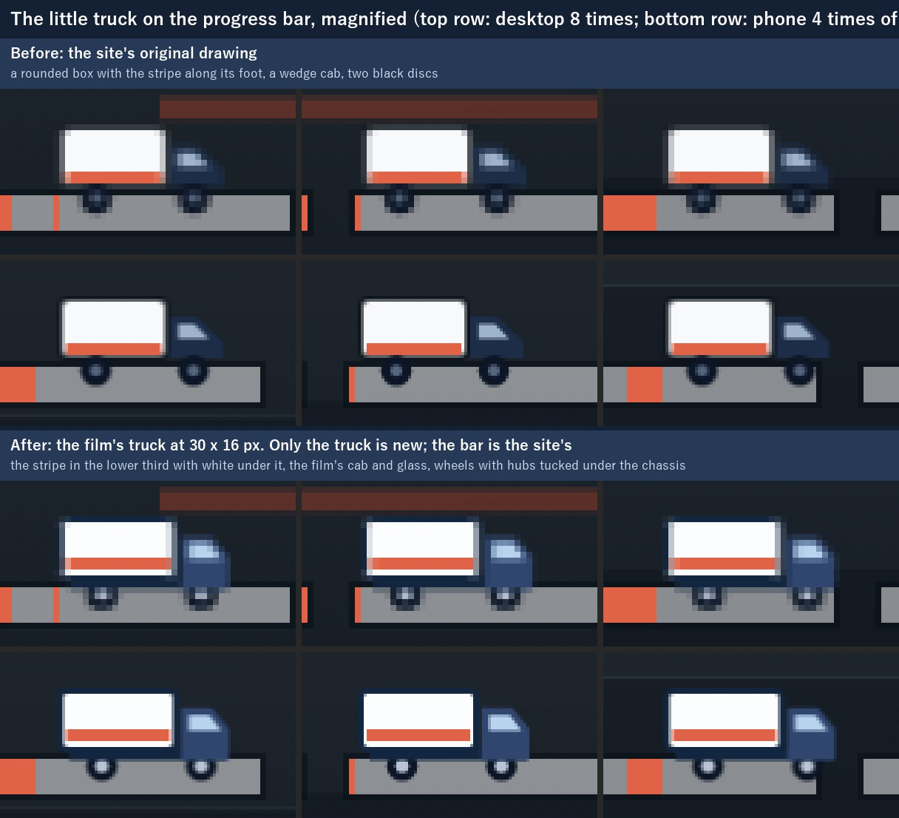
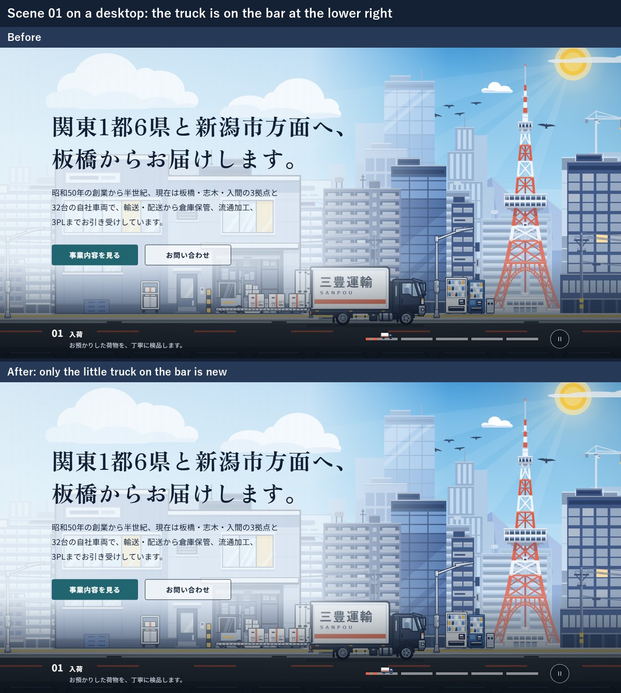
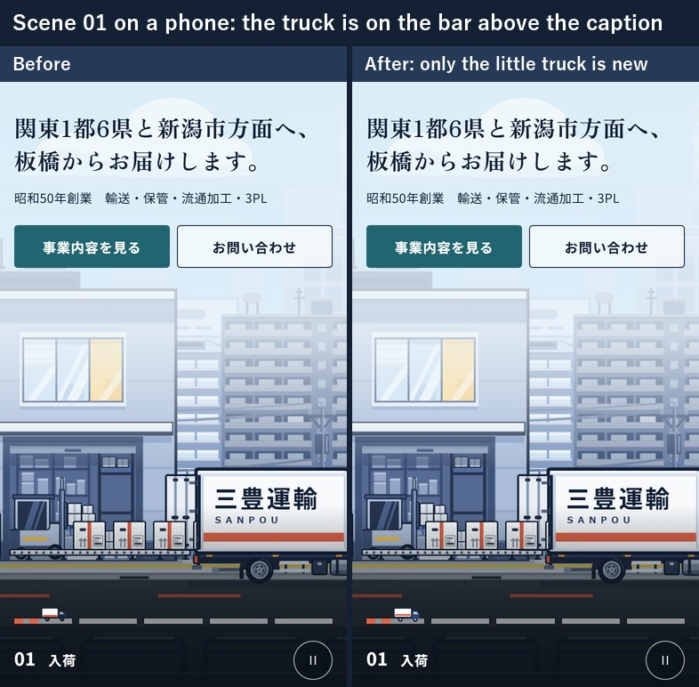
- The white row and the navy chassis keep the truck's stripe apart from the vermilion dashes under it.
- The cab is the film's navy one step lighter (#30466f for #28395a): at the film's own value it sank into the dark band it is always seen against.
- It has one node fewer than the original's drawing (both tyres are one shape, both hubs another).
- The viewer had its own copy of the old truck. It now reads the drawing out of each side's own player file, so the remake shows the new truck and the original its own.
One alternative for its cab: a picture to judge, not a change
The cab is lighter than the box's outline, so it is not the darkest part of the truck, as it is on every other truck in the film. The alternative: the film's own cab navy with a light edge along its roof and front to hold it off the band.
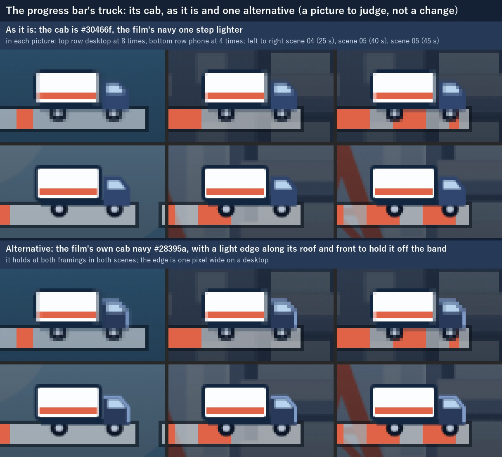
For the integration task, not changed here: the bar the truck rides (.hc-fill in the site's CSS) is a flat vermilion block with hard dash edges. Beside the redrawn truck it reads a little crude at 2x.
Checks on the finished film
- The original files are intact (7 of 7 checksums) and the website folder is untouched.
- check-viewer: 0 console errors. check-player-vs-glue: passes at both framings, for the remake and for the original. check-seams: passes.
- motion-check, all five scenes (to 49.5 s): 0 frozen steps and 0 pops in every scene. The move into the map is the same move; it lands 53 px higher.
- contrast-check: all 13 copy rows pass at both framings; the unfilled track fails as on the original.
- cloud-check: no cloud below a roof.
- Nodes per scene: 1483, 1494, 943, 945, 944: one fewer in each than before these fixes (the original has 1337, 1372, 1254, 778, 777).
- After the truck's stripe moved to the tail: no node added (scene 04: 945); check-viewer 0 console errors; motion-check on scene 04 0 frozen steps and 0 pops; contrast-check all 13 copy rows pass.
- The comparison pictures:
tools/sheet.pynow gives every tile in a row the same label bar, so the two pictures of a before/after start at the same height whatever their labels.
| The finished film, phone @2x, CPU 4x slower, one sitting, one side after the other, two runs each | Original | Remake |
|---|---|---|
| Frames a second | 75.1 / 74.3 | 82.8 / 84.9 |
| Frame time, median | 12.9 / 13.0 ms | 11.6 / 11.3 ms |
| Frames over 16.7 ms | 5.5 / 6.6 % | 3.3 / 2.9 % |
| Frames over 33 ms | 0.9 / 0.9 % | 0.4 / 0.4 % |
Seen and reported
- Niigata's ring on a phone: while its truck stands there the open ring comes within about 3 px of the buttons' lower edge. The dot at rest clears them.
- Niigata's northern end now runs off the top of the frame at both framings, as its grey neighbours do. Nothing that is drawn on the land is lost.
- The progress truck's cab: keep it as it is, or take the alternative under section 3.
- The progress bar itself: the note under section 3, for the integration task.